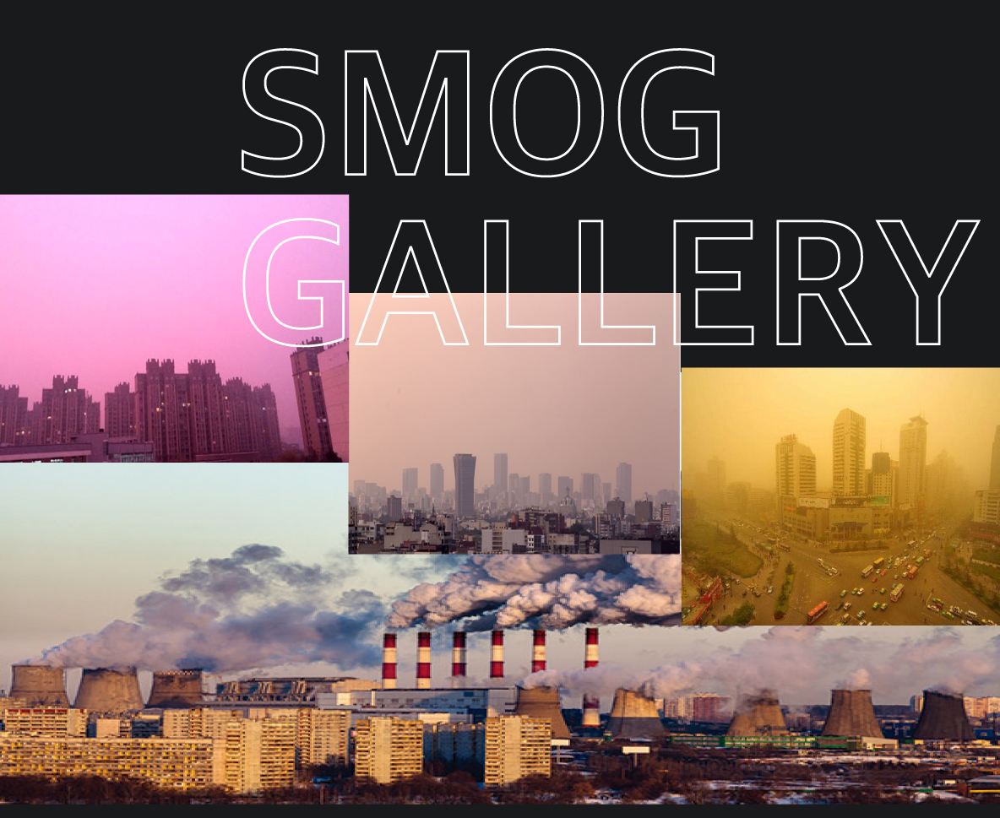

|
|
| |
지긋지긋한 미세먼지 우리몸에
얼마나 안좋을까? |
|
|
|
|
| |
미세먼지와 황사는 발생지 부터가 다릅니다. 미세먼지는 인간이 만들어낸
공장이나 자동차 등에서 나오는 오염물질입니다.미세먼지는 눈에 보이지 않을 만큼
매우 작으며 대기 중에 머물러 있습니다. |
|
|
|
| |
미국의 로스앤젤레스에서는 1943년 경부터 맑은 날씨에 안개가 발생하는
새로운스모그 현상이 나타나기 시작했다. 이 스모그에 의하여 눈의 자극, 식물의
낙엽현상,좋지 못한 냅새, 고무의 균열등의 피해가 생겼다. 이 현상에 대해서는
1956년경에 와서야 이산화질소와 탄화수소의 광화학적 반응에 의한 것이라는
|
|
| |
설이 정설로 확인되었다. 식물의 피해와 고무의 균열은 주로 오존에 의한 것이며,
눈의 자극은 오존과 더불어 알데이드, PAN 광화학적 생성물질에 의한 것임도
밝혀지게 되었다. 로스엔젤레스의 스모그는 자동차의 배기가스가 주원인이며
탄화수고, 일산화탄소, 질소산화물의 1차 오염물이 대기중의 태양광선 에너지에
의하여 광화학적반응을일으키고, 인체에 해로운 2차오염물질을 생성하는 점에
그 특색이 있다. |
|
| |
|
|
“멕시코시티 11년만에 최악 스모그…110
만대 차량운행 제한” |
멕시코시티 당국은 이날 오존 경보가 사흘째 발령됨에 따라 번호판 끝 번호를 기준으로 일부 차량에 대해
운행을 제한하고 시민들이 지하철이나 버스 등 대중교통수단을 이용할 것을 권고했다.
시 당국은 차량 운행 제한에 따른 불편을 줄이기 위해 이날 정오부터 지하철과 버스 등 대중교통을 무료로
운행하기 시작했다.
시 당국은 또 오존 수준이 허용치의 두 배 가까이 치솟음에 따라 주민들에게 야외활동을
자제할 것을 당부했다. |
|
|
| |
|  |
| |
|
|
| |
| "1만2000명 목숨 앗아간 최악의 대기오염사고..." |
영국 런던에서 1952년 12월 5일부터 9일까지 5일간 일어난 안개와 매연이 결합하여 스모그 현상을
일으킨 대기오염 사건으로 오염은 주로 공장의 배기가스, 빌딩이나 가정의 난방으로 인한 매연이 주요
원인이었다.
주로 노인, 어린이, 환자 등 허약체질을 가진 사람들에게 엄습하여 12000여명의 호흡기 환자가
사망하였다. 특히, 유아와 노인 사망자가 많았고, 45세이상에 있어서는 연령과 사망자 수가 비례하는
현상을 나타냈다. 이와 같은 참사로 가져온 스모그 사건은 주로 아황산가스와 떠돌아다니는 먼지가
안개와 결합하여 일어났다. |
|
|
| |
| |
"[17조 미세먼지 대책 무용지물] '창살없는
감옥'에 갇힌 대한민국" |
| |
한반도를 뒤덮은 미세먼지에 우리나라는 그야말로 창살 없는 감옥에 꼼짝없이 갇혔다. 전국 학교의 야외수업은 실내수업으로 대체됐고 공공기관과 기업 등의 야외행사 취소도 줄을 이었다.
미세먼지에 노출되지 않기 위해 승용차로 출퇴근하는 시민들이 늘면서 도로는 주차장을 방불케 했다. 차량 2부제를 시행한 공공기관 곳곳에서는 차량 진입을 놓고 승강이가 벌어졌다.
상황이 이런데도 미세먼지 대책은 겉돌고 있다. 무엇보다 고농도 미세먼지의 60~80%에 이르는 중국발 미세먼지에 대한 실효성 있는 정책이 나오지 못하고 있는 게 문제다.
전문가들은 최근
고농도 미세먼지의 가장 큰 요인으로 중국을 지목한다. 반기성 케이웨더 예보센터장은 “서울 초미세먼지 농도가 관측 이래 가장 높은 수치를 보였다”며 “가장 큰 원인은
중국발 스모그”라고 말했다.
하지만 정부의 중국발 미세먼지 대책은 베이징·톈진 등과의 저감 협력사업 확대, 중장기적으로 동북아 미세먼지 협약 체결 검토 등이 고작이다.
상황이 이렇다 보니 미세먼지 농도가 높을수록
오히려 승용차 이용량이 늘어나는 일도 발생하고 있다. 차량 2부제 대상을 민간차량으로 확대하는 방안을 검토하겠다던 정부는
아직도 관련 방안을 검토하고 있을 뿐이다. 추가 대책 없이 기준만
강화하다 보니 국민의 피로도만 높이는 게 아니냐는 지적도 나온다. 학생들이 운동장에 나갈 수 있는 날은
앞으로 더 줄어들게 됐다. |
|
|
|
| |
"뉴델리, 1주일째 ‘가스실’ 수준 스모그 지속" |
| |
인도 수도 뉴델리가 초미세먼지 탓에 ‘가스실’이나 다름 없을 정도로 짙은 스모그에 휩싸여 있는
상황이 1주일째 계속되고 있다.
대기오염 상태가 최악으로 치닫고 있는 상태인데도 정부는 뾰족한 해법을 내놓지 못하고 있다는
비판이 제기되는 가운데, 급기야는일부 항공노선이 중단되는 사례까지 나왔다.
s
12일 인도 NDTV 등에 따르면, 뉴델리가 속한 델리주 정부는 대기오염 대응을 위해
차량 홀짝제를 시행하려다 이를 결국 취소했다. 애초 주정부는 이 지역 등록차량 1,000만대 가운데 650만대 정도인
이륜차(오토바이),
여성이 운전하는 사륜차 등을 홀짝제 적용 대상에서 제외하려 했는데, 전날
환경법원이 “예외를 인정해선 안 된다”고 판결했기 때문이다.
시내버스와 지하철이 충분치 않은
상태에서 1일 최소 300만명의 승객을 대중교통으로 더 수용하는 것은 불가능하다고 판단, 차량
홀짝제
시행 자체를 보류하게 된 것이다.
|
|
|
| |
"베이징, 황사·스모그 겹쳐 대기오염 ‘위험’ 수준" |
| |
오전 황사와 미세먼지가 베이징 전역을 뒤덮었다. 중국 기상 당국은 오전 일찍 먼지 오염에 청색 경보를 내렸다. 중국은 스모그(오염된 공기가 안개와 함께 한곳에 머물러 있는
상태)에 대해서는 이미 26일 0시부터 28일 자정까지 사흘간 두 단계 더 높은 오렌지 경보를 발령한 상태다. 오렌지 경보가 이처럼 넓은 범위에서 동시에 발령한 것은
중국에서도
이례적이다.
중국은 청색·노란색·오렌지색·적색 4단계로 나눠 대기오염을 분류한다. 최고 등급인 적색이 대기오염이 가장 심각하다는 뜻이다. 이징시 환경감시센터는 몽골에서
시작된
황사가 아침에 베이징 전역을 덮쳤으며 하루 종일 영향을 줄 것으로 예상된다고 밝혔다.
SCMP는 “보통 베이징에서는 바람이 강하게 부는 봄에 황사가 기승을 부리는데,
바람이 불면 흩어지는 스모그와 겹치는 경우는 드물다”며 올해는 황사와 스모그가 겹쳐
대기오염이 특히 심각하다고 전했다.
|
|
| |
| |